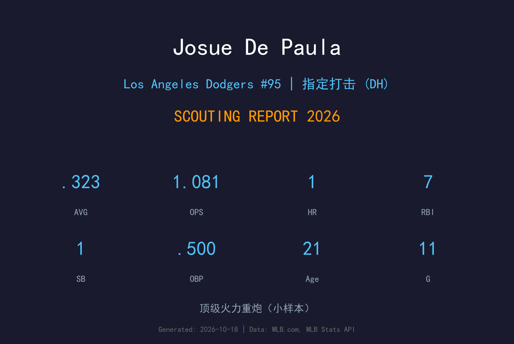
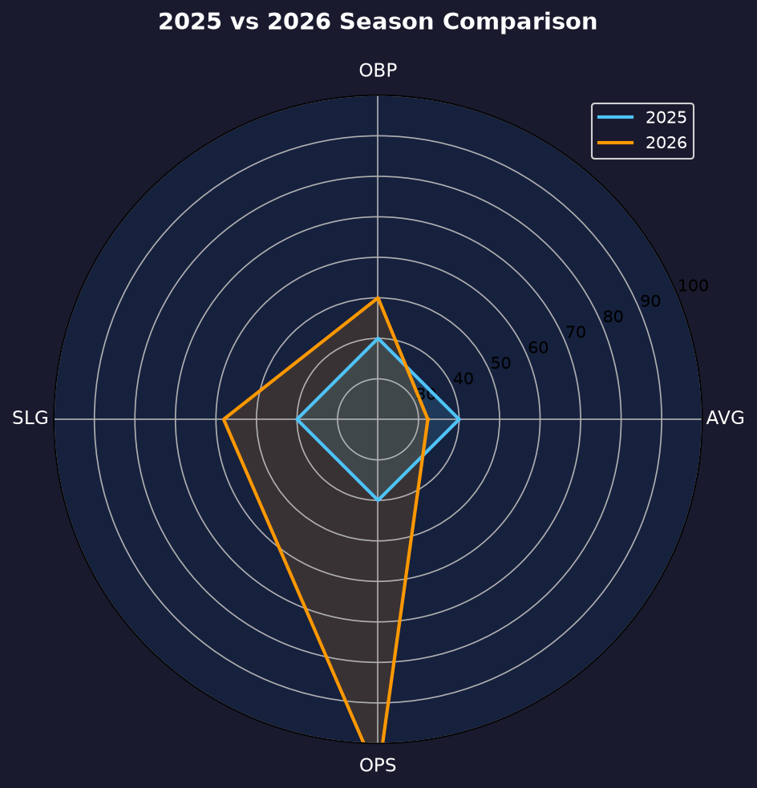
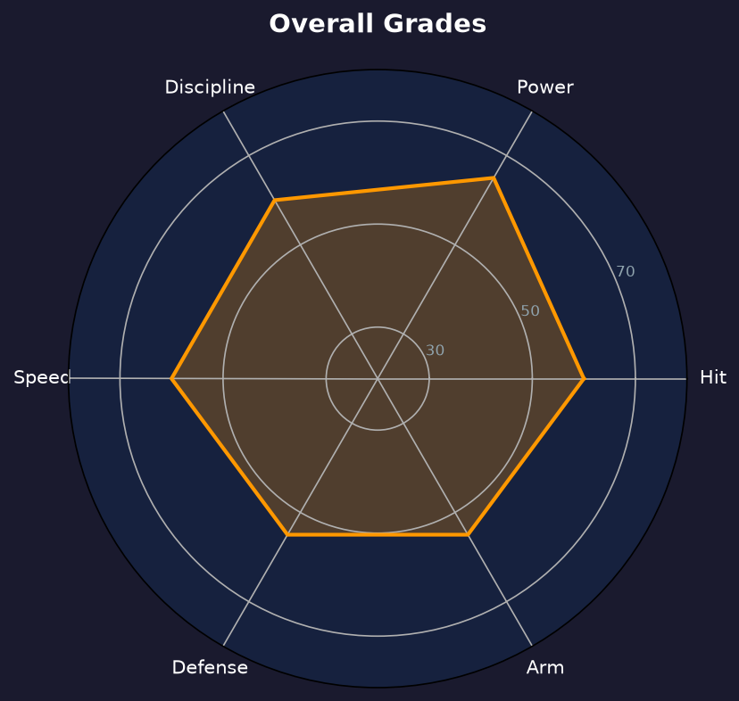

Los Angeles Dodgers | 外野手/DH | 左打 / 右投 | 道奇头号新秀

Josue De Paula 是道奇农场系统评级最高的新秀，被 MLB Pipeline 誉为"十年来最佳国际新秀打者"。2026年9月11日，他以21岁的年纪跳过3A直接登上大联盟，并在短短11场比赛中交出 .323/.500/.581、OPS 1.081 的惊人成绩单——OPS 全队最高。
他的小样本数据闪耀着超级新秀的所有特质：31打数10安打含3支二垒打与1支三垒打，更惊人的是 42 个打席送出 11 次保送（保送率 26.2%）仅5次三振。他的选球成熟度远超同龄球员，上垒机器的本质在大联盟第一个月就展露无遗。
需要强调：11场比赛的样本极小，对手可能还未针对他制定策略。但跳级首月就入选季后赛名单，足以证明道奇对他的信任。2027年他的目标是争夺开季名单的一席之地。
签约金 $397,500。多米尼加夏季联盟首秀即以 .349/.448/.522 拿下联盟打击率第六。
2A Tulsa 全面爆发，并当选 MLB Futures Game MVP，季中已是全联盟百大新秀前列。
21岁跳过3A直接登板，11场 .323/.500/.581、OPS 1.081 全队最高，随即入选季后赛名单。
⚠️ 小样本警告：仅 11 场 / 42 打席，数据仅供参考，不代表真实水平。

De Paula 2026年从2A Tulsa 直接跳级大联盟（无 2025 年 MLB 数据）。他在小联盟五年每年跨一级：2022 DSL → 2023 低阶1A → 2024 跨两级单A → 2025 高阶1A → 2026 2A+Futures Game MVP → MLB。
26.2% 的保送率与 0.50 的 BB/SO 比（11保送/5三振）是这份小样本报告中最有价值的信号。这种"不挥坏球"的本能无法被小样本运气解释——它来自天赋级别的 pitch recognition，这也是他获评十年来最佳国际新秀打者的核心理由。
.581 的长打率由 3 支二垒打、1 支三垒打和 1 支全垒打支撑，18 个垒打数。BABIP .360 偏高提示部分 AVG 是运气，但 SLG 的构成（extra-base hits 占比 50%）显示他的力量正在转化为实战长打。
从 Futures Game MVP 到大联盟 OPS 1.081，De Paula 的2026年是梦幻般的。道奇在争冠关键期敢把21岁跳级生放进打线，本身就是对天赋的最高背书。季后赛他 3 场代打虽未建功，但积累了宝贵经验。

道奇头号新秀，五Tools 全能型未来之星
A- 级 / 顶级新秀
道奇 2026 季后赛战绩：NLDS 3-1 晋级、NLCS 0-4 止步。
| G | PA | AB | H | BB | SO | AVG | OBP | SLG | OPS |
|---|---|---|---|---|---|---|---|---|---|
| 3 | 3 | 1 | 0 | 2 | 0 | .000 | .667 | .000 | .667 |
Josue De Paula 的2027赛季是"证明自己属于这里"的一年。春训他将全力争夺开季名单位置，即使从3A开始，他的天赋也确保他会在某个时刻回到大联盟并留下来。
2026：2A爆发 → Futures Game MVP → 跳级MLB（.323/.500/.581）→ 季后赛名单
2027：目标站稳大联盟、15+ 全垒打、竞争新人王
2028+：若兑现天赋，将成为道奇外野未来十年的核心
Josue De Paula 出生于纽约布鲁克林，高中时随家人搬到多米尼加共和国，2022年1月以 $397,500 签约金加盟道奇。他是前 NBA 球星 Stephon Marbury 与 Sebastian Telfair 的表亲——运动天赋写在基因里。
职业首秀（2022 多米尼加夏季联盟）他就以 .349/.448/.522 拿下联盟打击率第六，随即被球团认定为"十年来最佳国际新秀打者"。此后他一年一个台阶：2023年美国低阶1A、2024年跨两级单A、2025年高阶1A上垒机器、2026年2A全面爆发并当选 Futures Game MVP，直至9月11日跳级大联盟。每一步都在更年轻的年纪交出更漂亮的数据——这是超级新秀的教科书轨迹。
场外的 De Paula 以谦逊与好学著称，队友们惊讶于他这个年纪的成熟。他的偶像是 Juan Soto——同样以选球闻名的左打者。道奇球迷已经开始期待，这位布鲁克林出身的多米尼加少年，将成为下一个洛杉矶的招牌球星。